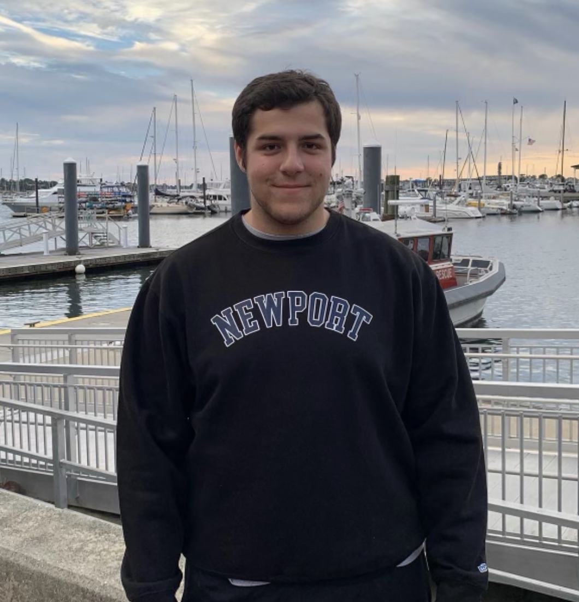
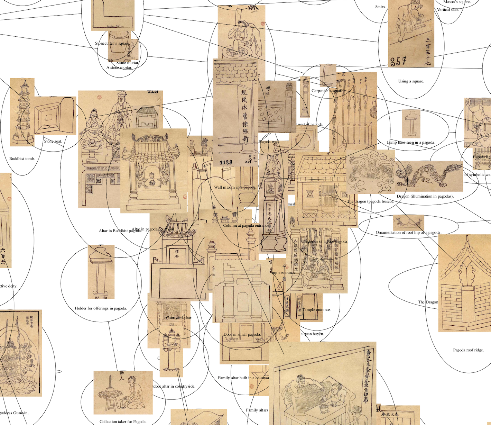
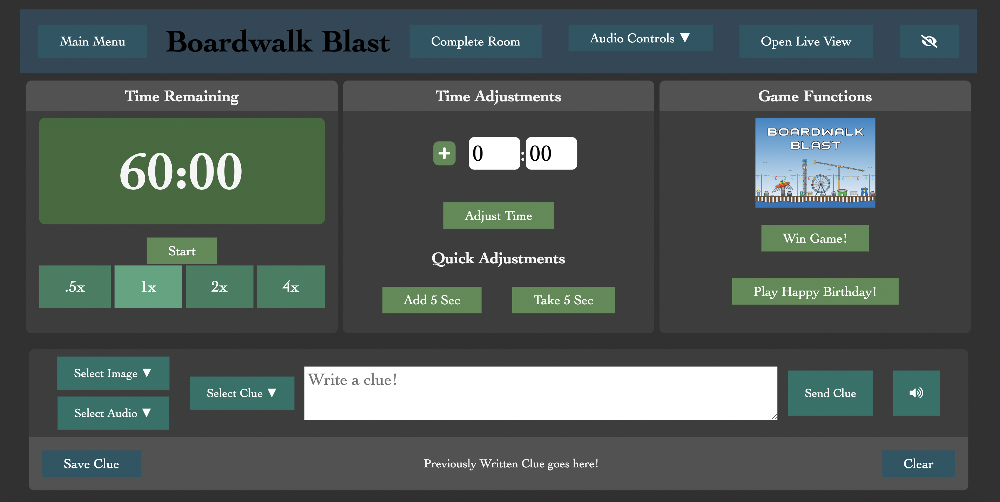
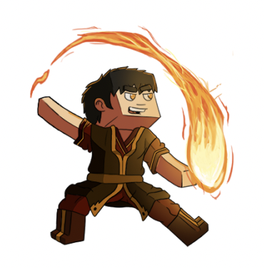

Tyler Gurth
Brown Univeristy, co 2025
About Me
19 yrs old, he/him.
Hi! My name is Tyler Gurth, and I am currently double majoring in Computer Science and History of Art and Architecture at Brown University.
I am versed in Python, Java, HTML, CSS, JavaScript, and Typescript. At Brown, I'm in the graphics and AI track.
My interests lie in game development, software engineering, UI/UX, and my research interests lie in art through artificial intelligence, and art identification through AI.
Feel free to reach out on any of my socials at any time, I am always up to connect! Or, email me!
Find me on my socials! LinkedIn Github
Projects
The Virtual Rosetta

The Virtual Rosetta was a project I worked on in the summer of 2022. It involved using scientific Python libraries like Sci-Kit Learn, SciPy, and Pandas to create visualization methods of a corpus of 4000 woodblock prints from Vietnam. Read more about it here: Research Poster
Escape Room Panel

I made a custom Escape Room web app panel for my current employer. It used Firebase hosting, storage, and database to manage and deploy the site. The web app included functions for room management, a clue storage system, and a leaderboard system. It brought to the table new previously unreported statistics to be used for advertising and room creation.
ProjectKorra

I contribute to the open source popular Minecraft Plugin "ProjectKorra". This Java project is a ton of fun, and I've worked a lot to engage the community, and enhance customizability of the plugin through greater configuration and toggleability. I also worked a lot on creating new custom content in the form of "abilities", think, magic spells that are animated through Minecraft's particle system and parametric equations.
Personal 3D Project Gallery